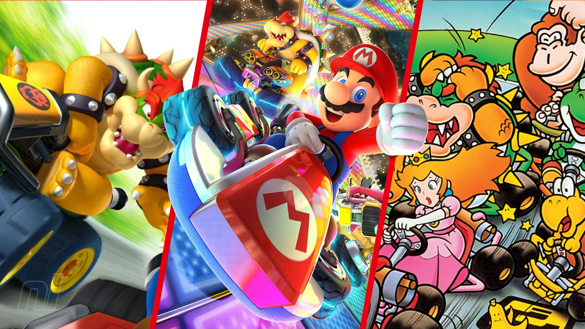
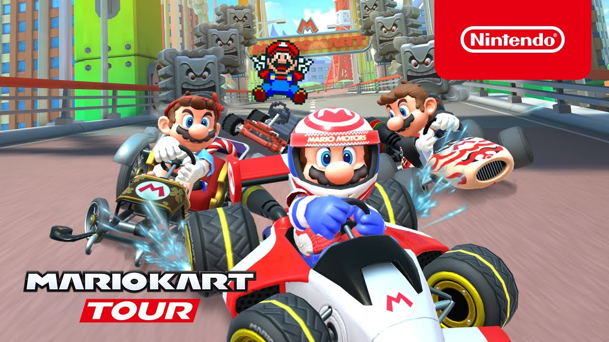

1. L'histoire de Mario Kart
Mario Kart est une série de jeux vidéo de course et de combat motorisé produite par Nintendo, adaptée de la série de jeux de plates-formes Super Mario. Débutée en 1992 par Super Mario Kart sur Super Nintendo, la série continue plus de vingt-cinq ans après avec Mario Kart 8 Deluxe sorti le 28 avril 2017 sur Nintendo Switch et continue encore de se développer de nos jours en 2023, ce qui fait donc 31 ans d'existence de la licence.
Jeux principraux
- Super Mario Kart (SNES, 1992)
- Mario Kart 64 (Nintendo 64, 1997)
- Mario Kart: Super Circuit (Game Boy Advance, 2001)
- Mario Kart: Double Dash!! (GameCube, 2003)
- Mario Kart DS (Nintendo DS, 2005)
- Mario Kart Wii (Wii, 2008)
- Mario Kart 7 (Nintendo 3DS, 2011)
- Mario Kart 8 (Wii U, 2014)
- Mario Kart 8 Deluxe (Nintendo Switch, 2017)
Jeux d'arcade

- Mario Kart Arcade GP (2005)
- Mario Kart Arcade GP 2 (2007)
- Mario Kart Arcade GP DX (2013)
- Mario Kart Arcade GP VR (2017)
Jeu mobile
- Mario Kart Tour (2019)
Cylindrées
Les cylindrées représentent la puissance du kart et donc sa vitesse en centimètres cubes ainsi que la maniabilité de celui-ci. Il en existe 3 depuis Mario Kart 64, avec l'arrivée du mode extra, aujourd'hui appelé le mode miroir. Il y a aussi l'apparition du mode 200cc dans Mario Kart 8 :
- 50cc : Le kart (ou la moto) va lentement, les coupes sont faciles.
- 100cc : Le kart (ou la moto toujours) va plus rapidement qu'en 50cc, les coupes commencent à se corser.
- 150cc : Les karts sont plus rapides et les adversaires plus difficiles à battres.
- Miroir : Même chose qu'en 150cc sauf que les trajectoires sont inversées.
- 200cc (depuis Mario Kart 8) : Les karts vont encore plus vite qu'en 150cc.